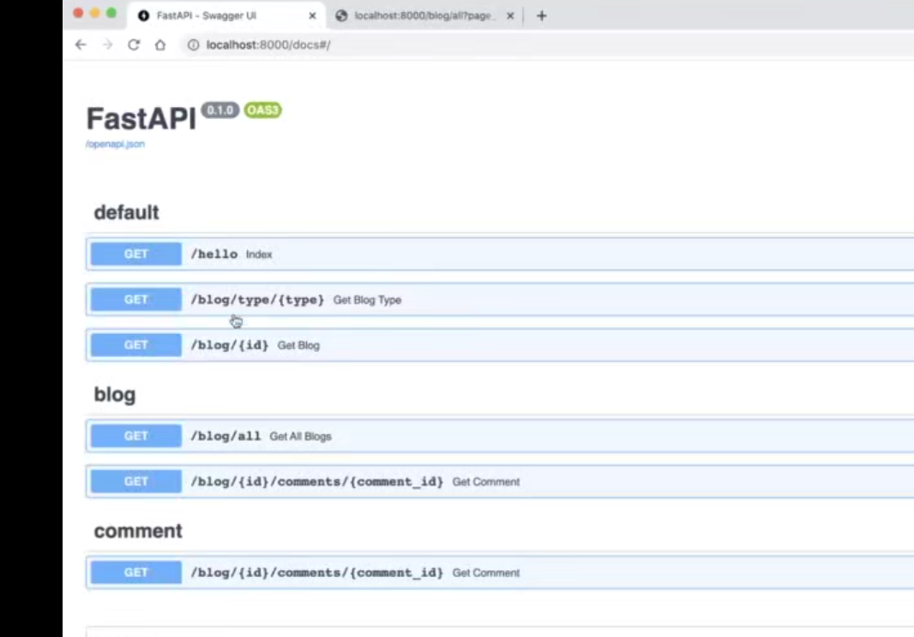
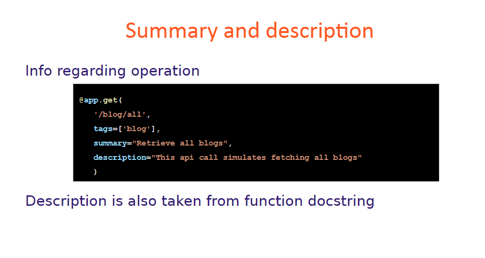
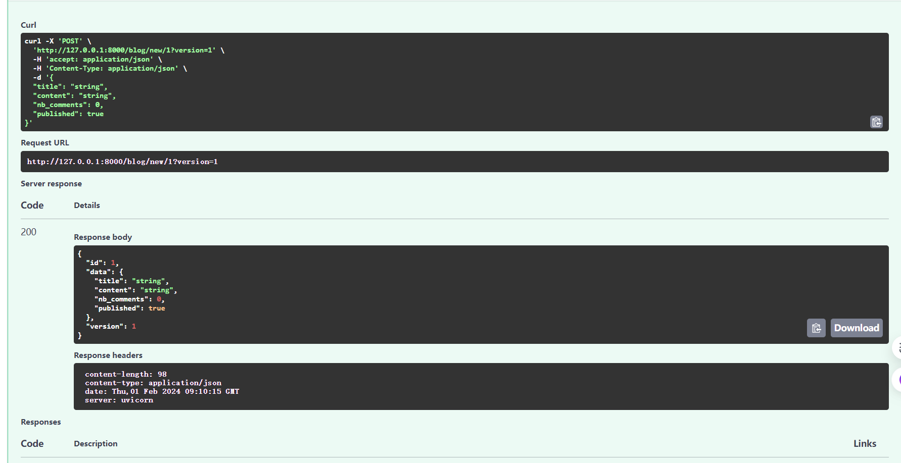
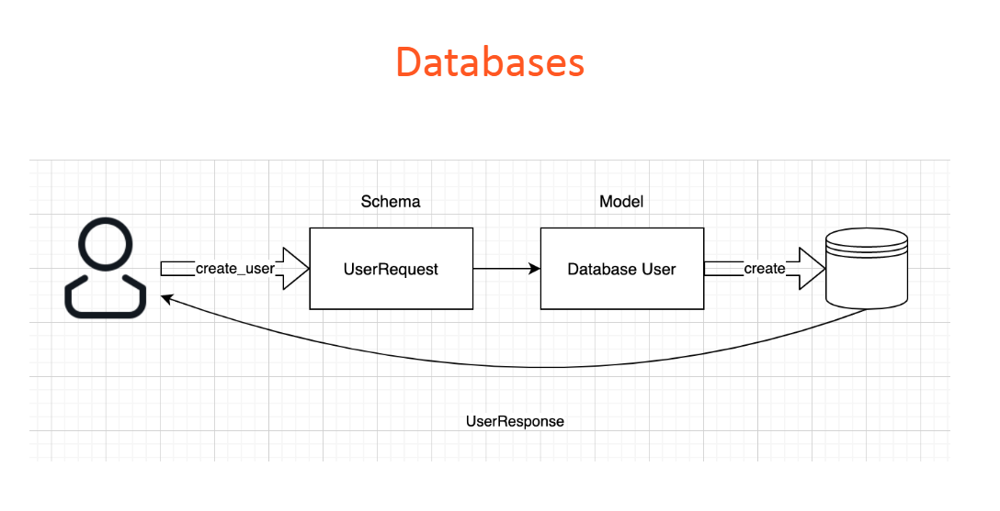
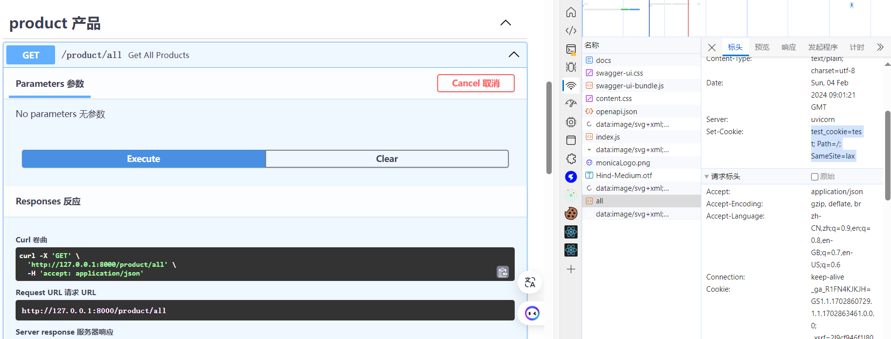

01 - Introduction

02 - Getting started
001 Section overview
002 Installation on Windows
pip install fastapi[all]
pip install fastapi uvicorn
# 1_hello-fastapi/main.py
from fastapi import FastAPI
app = FastAPI()
@app.get('/')
def index():
return 'hello fastapi'
uvicorn main:app --reload
004 FastAPI features
005 HelloWorld discussion
03 - GET method
001 Section overview
002 Path parameters
# 1_hello-fastapi/main.py
from fastapi import FastAPI
app = FastAPI()
@app.get('/')
def index():
return {'msg': 'hello fastapi'}
# 正常运行
@app.get('/blog/all')
def get_all_blogs():
return {'msg': 'all blogs provided'}
@app.get('/blog/{id}')
# def get_blog(id):
def get_blog(id: int): # 如果url里的参数类型不对(比如3.3), 会返回错误信息
return {'msg': f'Blog {id}'}
# 放在这会被上面的/{id}拦截, 然后报错, 注意方法的声明顺序
# @app.get('/blog/all')
# def get_all_blogs():
# return {'msg': 'all blogs provided'}
003 Predefined values
# 2_get-method/main.py
from fastapi import FastAPI
from enum import Enum
app = FastAPI()
###
# 博客类型
class BlogType(str, Enum):
short = 'short'
story = 'story'
howto = 'howto'
@app.get('/blog/type/{type}')
def get_blog_type(type: BlogType):
return {'msg': f'Blog type {type}'}
@app.get('/blog/{id}')
###
004 Query parameters
# 2_get-method/main.py
from fastapi import FastAPI
from typing import Optional
from enum import Enum
from fastapi.staticfiles import StaticFiles
app = FastAPI()
###
@app.get('/blog/all')
# def get_all_blogs(page=1, pageSize=10):
def get_all_blogs(page=1, pageSize: Optional[int] = None):
return {'msg': f'All {pageSize} blogs on page {page}'}
@app.get('/blog/{id}/comments/{comment_id}') # ?valid=true&username=Tom
def get_comment(id: int, comment_id: int, valid: bool = True, username: Optional[str] = None):
return {'msg': f'blog_id {id} comment_id {comment_id} valid {valid} username {username}'}
04 - Operation description
001 Section overview
002 Status code
from fastapi import FastAPI, Response, status
# 本接口只会返回 status_code 404
# @app.get('/blog/{id}', status_code=404)
@app.get('/blog/{id}', status_code=status.HTTP_404_NOT_FOUND)
# def get_blog(id):
def get_blog(id: int): # 如果url里的参数类型不对(比如3.3), 会返回错误信息
if id > 5:
return {'error': f'Blog {id} not found'}
else:
return {'msg': f'Blog {id}'}
@app.get('/v2/blog/{id}')
# @app.get('/v2/blog/{id}', status_code=status.HTTP_200_OK)
# def get_blog(id):
def get_blog_copy(id: int, resp: Response): # 如果url里的参数类型不对(比如3.3), 会返回错误信息
if id > 5:
resp.status_code = status.HTTP_404_NOT_FOUND
return {'error': f'Blog {id} not found'}
else:
resp.status_code = status.HTTP_200_OK
return {'msg': f'Blog {id}'}
003 Tags

004 Summary and description

@app.get('/blog/all', tags=['blog'],
description='This api call simulates fetching all blogs',
response_description="The list of available blogs")
# def get_all_blogs(page=1, pageSize=10):
def get_all_blogs(page=1, pageSize: Optional[int] = None):
return {'msg': f'All {pageSize} blogs on page {page}'}
@app.get('/blog/{id}/comments/{comment_id}', tags=['blog', 'comment']) # ?valid=true&username=Tom
def get_comment(id: int, comment_id: int, valid: bool = True, username: Optional[str] = None):
"""
Simulates retrieving a comment of a blog
- **id** mandatory path parameter
- **comment_id** mandatory path parameter
- **bool** optional query parameter
- **username** optional query parameter
"""
# 注释会被识别然后添加到swagger doc
return {'msg': f'blog_id {id} comment_id {comment_id} valid {valid} username {username}'}
005 Response description
05 - Routers
001 Section overview
002 Routers
003 Refactoring the app
# 4_Routers/router/blog_get.py
from fastapi import APIRouter, Response, status
from typing import Optional
from enum import Enum
router = APIRouter(
prefix="/blog",
tags=["blog"],
)
# 正常运行
# @router.get('/all')
# def get_all_blogs():
# return {'msg': 'all blogs provided'}
@router.get('/all',
description='This api call simulates fetching all blogs',
response_description="The list of available blogs")
def get_all_blogs(page=1, pageSize: Optional[int] = None):
return {'msg': f'All {pageSize} blogs on page {page}'}
@router.get('/{id}/comments/{comment_id}', tags=['comment'])
def get_comment(id: int, comment_id: int, valid: bool = True, username: Optional[str] = None):
"""
Simulates retrieving a comment of a blog
- **id** mandatory path parameter
- **comment_id** mandatory path parameter
- **bool** optional query parameter
- **username** optional query parameter
"""
return {'msg': f'blog_id {id} comment_id {comment_id} valid {valid} username {username}'}
# 博客类型
class BlogType(str, Enum):
short = 'short'
story = 'story'
howto = 'howto'
@router.get('/type/{type}')
def get_blog_type(type: BlogType):
return {'msg': f'Blog type {type}'}
@router.get('/{id}')
def get_blog_copy(id: int, resp: Response):
if id > 5:
resp.status_code = status.HTTP_404_NOT_FOUND
return {'error': f'Blog {id} not found'}
else:
resp.status_code = status.HTTP_200_OK
return {'msg': f'Blog {id}'}
# 4_Routers/main.py
from fastapi import FastAPI
from router import blog_get
app = FastAPI()
# 导入blog_get.py里的路由
app.include_router(blog_get.router)
@app.get('/')
def index():
return {'msg': 'hello fastapi'}
004 Adding a second router
from fastapi import APIRouter
router = APIRouter(
prefix='/blog',
tags=['blog'],
)
@router.post('/new')
def create_blog():
return {'data': 'blog created'}
# 4_Routers/main.py
from fastapi import FastAPI
from router import blog_get, blog_post
app = FastAPI()
# 导入路由
app.include_router(blog_get.router)
app.include_router(blog_post.router)
06 - Parameters
001 Section overview

002 Request body
# 5_Parameters/router/blog_post.py
from typing import Optional
from fastapi import APIRouter
from pydantic import BaseModel
router = APIRouter(
prefix='/blog',
tags=['blog'],
)
class BlogModel(BaseModel):
title: str
content: str
nb_comments: int
# 加了 = None 才能不传
published: Optional[bool] = None
@router.post('/new')
def create_blog(blog: BlogModel):
return {'data': blog}
003 Path and query parameters

@router.post('/new/{id}')
def create_blog(blog: BlogModel, id: int, version: int = 1):
return {
'id': id,
'data': blog,
'version': version
}
004 Parameter metadata

from fastapi import Query
###
@router.post('/new/{id}/comment')
def create_blog_comment(blog: BlogModel, id: int,
comment_id: int = Query(
None,
title="Id of the comment",
description='Some description for comment_id',
alias='commentId',
deprecated=True, # 已弃用
)):
return {
'blog': blog,
'id': id,
'comment_id': comment_id
}
005 Validators
@router.post('/new/{id}/comment')
def create_blog_comment(
blog: BlogModel, id: int,
comment_id: int = Query(
None,
title="Id of the comment",
description='Some description for comment_id',
alias='commentId',
deprecated=True, # 已弃用
),
# content: str = Body('hi how are you')
# content: str = Body(...)
content: str = Body(
Ellipsis,
min_length=10,
max_length=20,
# regex='^hi', # 正则 - hi开头
regex='^[a-z\s]*$', # 正则
)
):
return {
'blog': blog,
'id': id,
'comment_id': comment_id,
'content': content
}
006 Multiple values
@router.post('/new/{id}/comment')
def create_blog_comment(
blog: BlogModel, id: int,
comment_id: int = Query(
None,
title="Id of the comment",
description='Some description for comment_id',
alias='commentId',
deprecated=True, # 已弃用
),
# content: str = Body('hi how are you')
# content: str = Body(...)
content: str = Body(
Ellipsis,
min_length=10,
max_length=20,
# regex='^hi', # 正则 - hi开头
regex='^[a-z\s]*$', # 正则
),
# v: Optional[List[str]] = Query(None)
v: Optional[List[str]] = Query(['1', '2', '3'])
):
return {
'blog': blog,
'id': id,
'comment_id': comment_id,
'content': content,
'version': v
}
007 Number validators
@router.post('/new/{id}/comment/{comment_id}')
def create_blog_comment(
blog: BlogModel, id: int,
comment_title: str = Query(
None,
title="Title of the comment",
description='Some description for comment_title',
alias='commentTitle',
),
# content: str = Body('hi how are you')
# content: str = Body(...)
content: str = Body(
Ellipsis,
min_length=10,
max_length=20,
# regex='^hi', # 正则 - hi开头
regex='^[a-z\s]*$', # 正则
),
# v: Optional[List[str]] = Query(None)
v: Optional[List[str]] = Query(['1', '2', '3']),
# Path parameters cannot have a default value
# comment_id: int = Path(None, gt=5, le=10)
comment_id: int = Path(..., gt=5, le=10)
):
return {
'blog': blog,
'id': id,
'comment_id': comment_id,
'comment_title': comment_title,
'content': content,
'version': v
}
008 Complex subtypes
class Image(BaseModel):
url: str
alias: str
class BlogModel(BaseModel):
title: str
content: str
nb_comments: int
# 加了 = None 才能不传
published: Optional[bool] = None
tags: List[str] = []
metadata: Dict[str, str] = {'k1': 'v1'}
image: Optional[Image] = None
07 - Database with SQLAlchemy
001 Section overview
002 Quick intro about Dependencies
003 Databases in FastAPI

005 Create database and table
pip install sqlalchemy fastapi uvicorn
# 6_SQLAlchemy/db/database.py
from sqlalchemy import create_engine
from sqlalchemy.ext.declarative import declarative_base
from sqlalchemy.orm import sessionmaker
SQLALCHEMY_DATABASE_URL = "sqlite:///./fastapi-practice.db"
engine = create_engine(
SQLALCHEMY_DATABASE_URL, connect_args={"check_same_thread": False}
)
SessionLocal = sessionmaker(autocommit=False, autoflush=False, bind=engine)
Base = declarative_base()
006 Solving a common python environment problem
007 Create database and table continued
# 6_SQLAlchemy/db/database.py
#
def get_db():
db = SessionLocal()
try:
yield db
finally:
db.close()
# 6_SQLAlchemy/db/models.py
from db.database import Base
from sqlalchemy import Boolean, Column, Integer, String
class DbUser(Base):
__tablename__ = "users"
id = Column(Integer, primary_key=True, index=True)
username = Column(String)
email = Column(String)
password = Column(String)
# 6_SQLAlchemy/main.py
from fastapi import FastAPI
from router import blog_get, blog_post
from db import models
from db.database import engine
app = FastAPI()
# 导入路由 ...
@app.get('/')
def index():
return {'msg': 'hello fastapi'}
# 创建数据库表
models.Base.metadata.create_all(engine)
008 Write data in database
pip install bcrypt passlib
# 6_SQLAlchemy/schemas.py -> 在程序中使用的orm表对象
from pydantic import BaseModel
class UserBase(BaseModel):
username: str
email: str
password: str
# 展示给前端, 不展示密码
class UserDisplay(BaseModel):
username: str
email: str
# 让系统自动返回这个类 DbUser -> UserDisplay
class Config():
# F:\anaconda\envs\py39f\lib\site-packages\pydantic\_internal\_config.py:321:
# UserWarning: Valid config keys have changed in V2:
# * 'orm_mode' has been renamed to 'from_attributes'
# orm_mode = True
from_attributes = True
# 6_SQLAlchemy/db/db_user.py -> 操作表的函数
from sqlalchemy.orm.session import Session
from db.hash import Hash
from schemas import UserBase
from db.models import DbUser
def create_user(db: Session, request: UserBase):
new_user = DbUser(
username=request.username,
email=request.email,
password=Hash.bcrypt(request.password)
)
db.add(new_user)
db.commit()
db.refresh(new_user) # 刷新id
return new_user
# router/user.py
from fastapi import APIRouter, Depends
from schemas import UserBase, UserDisplay
from db.database import get_db
from db import db_user
from sqlalchemy.orm import Session
router = APIRouter(
prefix="/user",
tags=["users"]
)
# Create user
@router.post('/', response_model=UserDisplay)
def create_user(request: UserBase, db: Session = Depends(get_db)):
return db_user.create_user(db, request)
# Read user
# Update user
# Delete user
009 Process review
010 Create and read
# 6_SQLAlchemy/db/db_user.py -> 操作表的函数
from sqlalchemy.orm.session import Session
from db.hash import Hash
from schemas import UserBase
from db.models import DbUser
def create_user(db: Session, request: UserBase):
###
def get_all_users(db: Session):
return db.query(DbUser).all()
def get_user(db: Session, user_id: int):
return db.query(DbUser).filter(DbUser.id == user_id).first()
# router/user.py
from fastapi import APIRouter, Depends
from schemas import UserBase, UserDisplay
from db.database import get_db
from db import db_user
from typing import List
from sqlalchemy.orm import Session
router = APIRouter(
prefix="/user",
tags=["users"]
)
# Create user
###
# Read All user
@router.get('/', response_model=list[UserDisplay])
def get_all_users(db: Session = Depends(get_db)):
return db_user.get_all_users(db)
# Read One user
@router.get('/{id}', response_model=UserDisplay)
def get_user(id: int, db: Session = Depends(get_db)):
return db_user.get_user(db, id)
# Update user
# Delete user
011 Update and delete
# 6_SQLAlchemy/db/db_user.py -> 操作表的函数
from sqlalchemy.orm.session import Session
from db.hash import Hash
from schemas import UserBase
from db.models import DbUser
###
def update_user(db: Session, id: int, request: UserBase):
user = db.query(DbUser).filter(DbUser.id == id)
user.update({
DbUser.username: request.username,
DbUser.email: request.email,
DbUser.password: Hash.bcrypt(request.password)
})
db.commit()
return 'ok'
def delete_user(db: Session, id: int):
user = db.query(DbUser).filter(DbUser.id == id).first()
db.delete(user)
db.commit()
return 'ok'
# router/user.py
from fastapi import APIRouter, Depends
from schemas import UserBase, UserDisplay
from db.database import get_db
from db import db_user
from typing import List
from sqlalchemy.orm import Session
router = APIRouter(
prefix="/user",
tags=["users"]
)
###
# Update user
@router.post('/{id}/update')
def update_user(id: int, request: UserBase, db: Session = Depends(get_db)):
return db_user.update_user(db, id, request)
# Delete user
@router.delete('/delete/{id}')
def delete_user(id: int, db: Session = Depends(get_db)):
return db_user.delete_user(db, id)
012 Relationships
# 6_SQLAlchemy/db/models.py
from sqlalchemy.orm import relationship
from db.database import Base
from sqlalchemy import Column, ForeignKey
from sqlalchemy.sql.sqltypes import Boolean, Integer, String
class DbUser(Base):
__tablename__ = "users"
id = Column(Integer, primary_key=True, index=True)
username = Column(String)
email = Column(String)
password = Column(String)
# back_populates 对应的是另一个表的字段
items = relationship("DbArticle", back_populates="user")
class DbArticle(Base):
__tablename__ = "articles"
id = Column(Integer, primary_key=True, index=True)
title = Column(String)
content = Column(String)
published = Column(Boolean)
user_id = Column(Integer, ForeignKey('users.id'))
# back_populates 对应的是另一个表的字段
user = relationship("DbUser", back_populates="items")
# 6_SQLAlchemy/schemas.py -> 在程序中使用的orm表对象
from typing import List
from pydantic import BaseModel
# Article inside UserDisplay
class Article(BaseModel):
title: str
content: str
published: bool
class Config():
from_attributes = True
class UserBase(BaseModel):
username: str
email: str
password: str
# 展示给前端, 不展示密码
class UserDisplay(BaseModel):
username: str
email: str
items: List[Article]
# 让系统自动返回这个类 DbUser -> UserDisplay
class Config():
# F:\anaconda\envs\py39f\lib\site-packages\pydantic\_internal\_config.py:321:
# UserWarning: Valid config keys have changed in V2:
# * 'orm_mode' has been renamed to 'from_attributes'
# orm_mode = True
from_attributes = True
# User inside ArticleDisplay
class User(BaseModel):
id: int
username: str
class Config():
from_attributes = True
class ArticleBase(BaseModel):
title: str
content: str
published: bool
creator_id: int
class ArticleDisplay(BaseModel):
title: str
content: str
published: bool
user: User
class Config():
from_attributes = True
# db/db_article.py
from sqlalchemy.orm.session import Session
from db.models import DbArticle
from schemas import Article, ArticleBase
def create_article(db: Session, request: ArticleBase):
new_article = DbArticle(
title=request.title,
content=request.content,
published=request.published,
user_id=request.creator_id
)
db.add(new_article)
db.commit()
db.refresh(new_article)
return new_article
def get_article(db: Session, id: int):
article = db.query(DbArticle).filter(DbArticle.id == id).first()
return article
# router/article.py
from fastapi import APIRouter, Depends
from schemas import ArticleBase, ArticleDisplay
from db.database import get_db
from db import db_article
from typing import List
from sqlalchemy.orm import Session
router = APIRouter(
prefix="/article",
tags=["article"]
)
# create article
@router.post("/", response_model=ArticleDisplay)
def create_article(request: ArticleBase, db: Session = Depends(get_db)):
return db_article.create_article(db, request)
# get article
@router.get("/{id}", response_model=ArticleDisplay)
def get_article(id: int, db: Session = Depends(get_db)):
return db_article.get_article(db, id)
# 6_SQLAlchemy/main.py
from fastapi import FastAPI
from router import blog_get, blog_post, user, article
from db import models
from db.database import engine
app = FastAPI()
# 导入路由
app.include_router(blog_get.router)
app.include_router(blog_post.router)
app.include_router(user.router)
app.include_router(article.router)
08 - Concepts
001 Section overview
002 Error handling
# 7_concept/db/db_article.py
def get_article(db: Session, id: int):
article = db.query(DbArticle).filter(DbArticle.id == id).first()
if not article:
raise HTTPException(
status_code=status.HTTP_404_NOT_FOUND,
detail=f"Article with id {id} not found"
)
return article
# 7_concept/db/db_user.py -> 操作表的函数
def get_user(db: Session, user_id: int):
user = db.query(DbUser).filter(DbUser.id == user_id).first()
if not user:
raise HTTPException(
status_code=status.HTTP_404_NOT_FOUND,
detail=f"User with id {id} not found"
)
return user
def update_user(db: Session, id: int, request: UserBase):
user = db.query(DbUser).filter(DbUser.id == id)
if not user:
raise HTTPException(
status_code=status.HTTP_404_NOT_FOUND,
detail=f"User with id {id} not found"
)
user.update({
DbUser.username: request.username,
DbUser.email: request.email,
DbUser.password: Hash.bcrypt(request.password)
})
db.commit()
return 'ok'
def delete_user(db: Session, id: int):
user = db.query(DbUser).filter(DbUser.id == id).first()
if not user:
raise HTTPException(
status_code=status.HTTP_404_NOT_FOUND,
detail=f"User with id {id} not found"
)
db.delete(user)
db.commit()
return 'ok'
# exceptions.py
class StoryException(Exception):
def __init__(self, name: str):
self.name = name
# 7_concept/db/db_article.py
from sqlalchemy.orm.session import Session
from db.models import DbArticle
from exceptions import StoryException
from schemas import Article, ArticleBase
from fastapi import HTTPException, status
def create_article(db: Session, request: ArticleBase):
# 用于模拟异常
if request.content.startswith('Once upon a time'):
raise StoryException('No stories please')
new_article = DbArticle(
title=request.title,
content=request.content,
published=request.published,
user_id=request.creator_id
)
db.add(new_article)
db.commit()
db.refresh(new_article)
return new_article
# 7_concept/main.py
from fastapi import FastAPI, Request
from fastapi import HTTPException, status
from fastapi.responses import JSONResponse
from exceptions import StoryException
from router import blog_get, blog_post, user, article
from db import models
from db.database import engine
@app.exception_handler(StoryException)
def story_exception_handler(request: Request, exc: StoryException):
return JSONResponse(
status_code=418, # 418 测试状态码
content={"detail": exc.name}
)
# 这个会拦截所有异常, 不建议
# @app.exception_handler(HTTPException)
# def custom_exception_handler(request: Request, exc: HTTPException):
# return JSONResponse(str(exc), status_code=400)
003 Custom Response
# router/product.py
from fastapi import APIRouter
from fastapi.responses import Response, HTMLResponse, PlainTextResponse
router = APIRouter(
prefix='/product',
tags=['product']
)
products = ['watch', 'camera', 'phone']
@router.get('/all')
def get_all_products():
# return product
data = " ".join(products)
return Response(content=data, media_type="text/plain")
@router.get('/{id}', responses={
# 让接口描述是指定的而不是默认的application/json
200: {
"content": {
'text/html': {
"<div>Product</div>"
}
},
'description': 'Returns the HTML for an object'
},
404: {
"content": {
'text/plain': {
"Product not available"
}
},
'description': 'A clear text error message'
}
})
def get_product(id: int):
if id > len(products) - 1:
out = 'Product not available'
return PlainTextResponse(status_code=404, content=out, media_type='text/plain')
else:
product = products[id]
out = f"""
<head>
<style>
.product {{
width: 500px;
height: 30px;
border: 2px inset green;
background-color: lightblue;
text-align: center;
}}
</style>
<head>
<div class="product">{product}</div>
"""
return HTMLResponse(content=out, media_type='text/html')
004 Headers
# router/product.py
@router.get('/withheader')
def get_products(
response: Response,
# custom_header: Optional[str] = Header(None)
custom_header: Optional[List[str]] = Header(None)
):
response.headers['X-Custom-Header'] = ', '.join(custom_header)
return products
005 Cookies

# router/product.py
from fastapi import APIRouter, Header, Cookie
@router.get('/all')
def get_all_products():
# return product
data = " ".join(products)
res = Response(content=data, media_type="text/plain")
res.set_cookie(key='test_cookie', value='test')
return res
@router.get('/withheader')
def get_products(
response: Response,
# custom_header: Optional[str] = Header(None)
custom_header: Optional[List[str]] = Header(None),
test_cookie: Optional[str] = Cookie(None) # 发请求时, 会自动从cookie里读取 test_cookie
):
response.headers['X-Custom-Header'] = ', '.join(custom_header)
return {
'data': products,
'custom_header': custom_header,
'my_cookie': test_cookie
}
006 Form data
pip install python-multipart
# router/product.py
from fastapi import APIRouter, Header, Cookie, Form
@router.post('/new')
def create_product(name: str = Form(...)):
products.append(name)
return products
007 CORS
# 7_concept/main.py
from fastapi.middleware.cors import CORSMiddleware
# 允许跨域
origins = [
"http://localhost:3000/",
]
app.add_middleware(
CORSMiddleware,
# allow_origins=["*"],
allow_origins=origins,
allow_credentials=True,
allow_methods=["*"],
allow_headers=["*"],
)
09 - Authentication
001 Section overview
002 Authentication
003 Securing an endpoint
# auth/oauth2.py
from fastapi.security import OAuth2PasswordBearer
# 身份验证令牌对应的变量名 token
oauth2_schema = OAuth2PasswordBearer(tokenUrl="token")
# router/article.py
from auth.oauth2 import oauth2_schema
# get article
@router.get("/{id}", response_model=ArticleDisplay)
def get_article(id: int, db: Session = Depends(get_db), token: str = Depends(oauth2_schema)):
return db_article.get_article(db, id)
005 Generating access token
# 生成 token key
openssl rand -hex 32
pip install python-jose
# auth/authentication.py
from fastapi import APIRouter, HTTPException, status
from fastapi.param_functions import Depends
from fastapi.security import OAuth2PasswordRequestForm
from sqlalchemy.orm.session import Session
from db.database import get_db
from db.models import DbUser
from db.hash import Hash
from auth import oauth2
router = APIRouter(
tags=["authentication"]
)
@router.post("/token")
def get_token(request: OAuth2PasswordRequestForm = Depends(), db: Session = Depends(get_db)):
user = db.query(DbUser).filter(DbUser.username == request.username).first()
if not user:
raise HTTPException(status_code=status.HTTP_404_NOT_FOUND, detail="Invalid credentials")
if not Hash.verify(user.password, request.password):
raise HTTPException(status_code=status.HTTP_401_UNAUTHORIZED, detail="Invalid password")
access_token = oauth2.create_access_token(data={"sub": user.username})
return {
'access_token': access_token,
'token_type': 'bearer',
'user_id': user.id,
'username': user.username,
}
# main.py
from fastapi import FastAPI, Request
from fastapi import HTTPException, status
from fastapi.responses import JSONResponse
from fastapi.middleware.cors import CORSMiddleware
from exceptions import StoryException
from router import blog_get, blog_post, user, article, product
from auth import authentication
from db import models
from db.database import engine
app = FastAPI()
# 导入路由
app.include_router(blog_get.router)
app.include_router(blog_post.router)
app.include_router(user.router)
app.include_router(article.router)
app.include_router(product.router)
app.include_router(authentication.router)
# auth/oauth2.py
from fastapi.security import OAuth2PasswordBearer
from typing import Optional
from datetime import timedelta, datetime
from jose import jwt
# 身份验证令牌对应的变量名 token
oauth2_schema = OAuth2PasswordBearer(tokenUrl="token")
# openssl rand -hex 32 生成的随机字符串
SECRET_KEY = "0d41a5ae989119e68e2d2945a5e227721073e5fd2ff2e55fb7e9d70c4a064fd7"
ALGORITHM = "HS256"
ACCESS_TOKEN_EXPIRE_MINUTES = 30
def create_access_token(data: dict, expires_delta: Optional[timedelta] = None):
to_encode = data.copy()
if expires_delta:
expire = datetime.utcnow() + expires_delta
else:
expire = datetime.utcnow() + timedelta(minutes=15)
to_encode.update({"exp": expire})
encoded_jwt = jwt.encode(to_encode, SECRET_KEY, algorithm=ALGORITHM)
return encoded_jwt
点击接口右边的锁图标
填入账号密码
登录后再请求就有带token
006 User authentication
# auth/oauth2.py
from fastapi import Depends, HTTPException, status
from fastapi.security import OAuth2PasswordBearer
from typing import Optional
from datetime import timedelta, datetime
from jose import jwt, JWTError
from sqlalchemy.orm import Session
from db.database import get_db
from db import db_user
# ...
def get_current_user(token: str = Depends(oauth2_schema), db: Session = Depends(get_db)):
credentials_exception = HTTPException(
status_code=status.HTTP_401_UNAUTHORIZED,
detail="Could not validate credentials",
headers={"WWW-Authenticate": "Bearer"},
)
try:
payload = jwt.decode(token, SECRET_KEY, algorithms=[ALGORITHM])
username: str = payload.get("sub")
if username is None:
raise credentials_exception
except JWTError:
raise credentials_exception
user =db_user.get_user_by_username(db, username)
if user is None:
raise credentials_exception
return user
# router/article.py
from fastapi import APIRouter, Depends
from schemas import ArticleBase, ArticleDisplay, UserBase
from db.database import get_db
from db import db_article
from typing import List
from auth.oauth2 import oauth2_schema, get_current_user
from sqlalchemy.orm import Session
router = APIRouter(
prefix="/article",
tags=["article"]
)
# create article
@router.post("/", response_model=ArticleDisplay)
def create_article(request: ArticleBase, db: Session = Depends(get_db),
current_user: UserBase = Depends(get_current_user)):
return db_article.create_article(db, request)
# get article
# @router.get("/{id}", response_model=ArticleDisplay)
# def get_article(id: int, db: Session = Depends(get_db), token: str = Depends(oauth2_schema)):
@router.get("/{id}")
def get_article(id: int, db: Session = Depends(get_db), current_user: UserBase = Depends(get_current_user)):
return {
'data': db_article.get_article(db, id),
'current_user': current_user
}
# db/db_user.py -> 操作表的函数
from fastapi import HTTPException, status
from sqlalchemy.orm.session import Session
from db.hash import Hash
from schemas import UserBase
from db.models import DbUser
# ...
def get_user_by_username(db: Session, username: str):
user = db.query(DbUser).filter(DbUser.username == username).first()
if not user:
raise HTTPException(
status_code=status.HTTP_404_NOT_FOUND,
detail=f"User with username {username} not found"
)
return user
# ...
10 - Working with files
001 Section overview
002 File

# router/file.py
from fastapi import APIRouter, File
router = APIRouter(
prefix="/file",
tags=["file"]
)
@router.post('/file')
def get_file(file: bytes = File(...)):
content = file.decode('utf-8')
lines = content.split('\n')
return {'lines': lines}
# main.py
from fastapi import FastAPI, Request
from fastapi import HTTPException, status
from fastapi.responses import JSONResponse
from fastapi.middleware.cors import CORSMiddleware
from exceptions import StoryException
from router import blog_get, blog_post, user, article, product, file
from auth import authentication
from db import models
from db.database import engine
app = FastAPI()
# 导入路由
app.include_router(blog_get.router)
app.include_router(blog_post.router)
app.include_router(user.router)
app.include_router(article.router)
app.include_router(product.router)
app.include_router(authentication.router)
app.include_router(file.router)
003 UploadFile
# router/file.py
@router.post('/upload')
def get_uploadfile(upload_file: UploadFile = File(...)):
# 同名文件会覆盖, 所以可以使用随机名称替代filename保存
path = f"files/{upload_file.filename}"
with open(path, 'w+b') as buffer:
# 保存本地
shutil.copyfileobj(upload_file.file, buffer)
return {
'filename': path,
'type': upload_file.content_type
}
004 Making files statically available
pip install aiofiles
# main.py
from fastapi import FastAPI, Request
from fastapi import HTTPException, status
from fastapi.responses import JSONResponse
from fastapi.middleware.cors import CORSMiddleware
from exceptions import StoryException
from router import blog_get, blog_post, user, article, product, file
from auth import authentication
from db import models
from db.database import engine
from fastapi.staticfiles import StaticFiles
# ...
# 静态文件
app.mount("/files", StaticFiles(directory="files"), name="files")
005 Downloading files
# router/file.py
@router.get('/download/{name}', response_class=FileResponse)
def get_file(name: str):
path = f'files/{name}'
return path